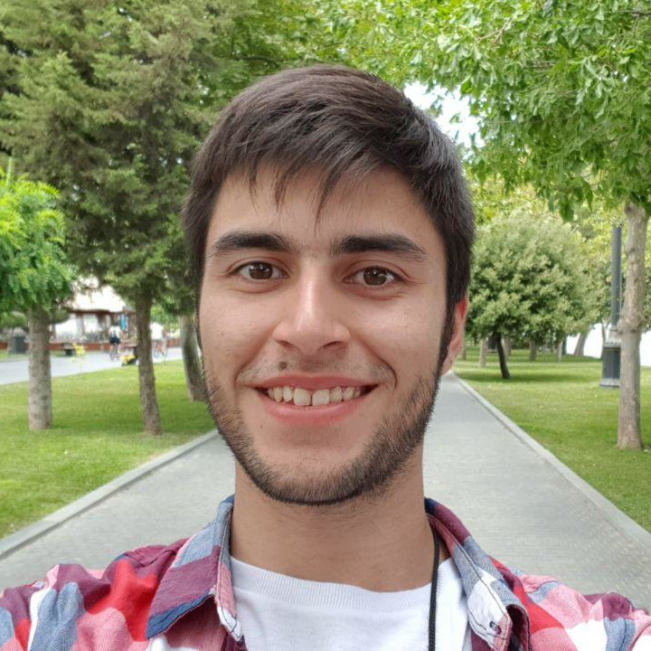

Welcome to my personal page!
I'm Carlos Miguel Soto, from Corrientes, Argentina. I'm an 18 year old Computer Science student at the University of Buenos Aires.
I've participated in multiple informatics and mathematics competitions throughout my highschool years, incuding the IOI and the IMO.
In this page you will mostly find my posted university notes.